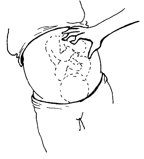

Firmly grasp the top of the womb, and gently move it back and forth.
The baby's bottom is soft and wide. When you move it from side to side, the whole body moves with it.
The baby's head is harder and smaller. When you move the head, the neck bends, and the body does not move much.
{% endblock %} {% block footer %} {% endblock %}